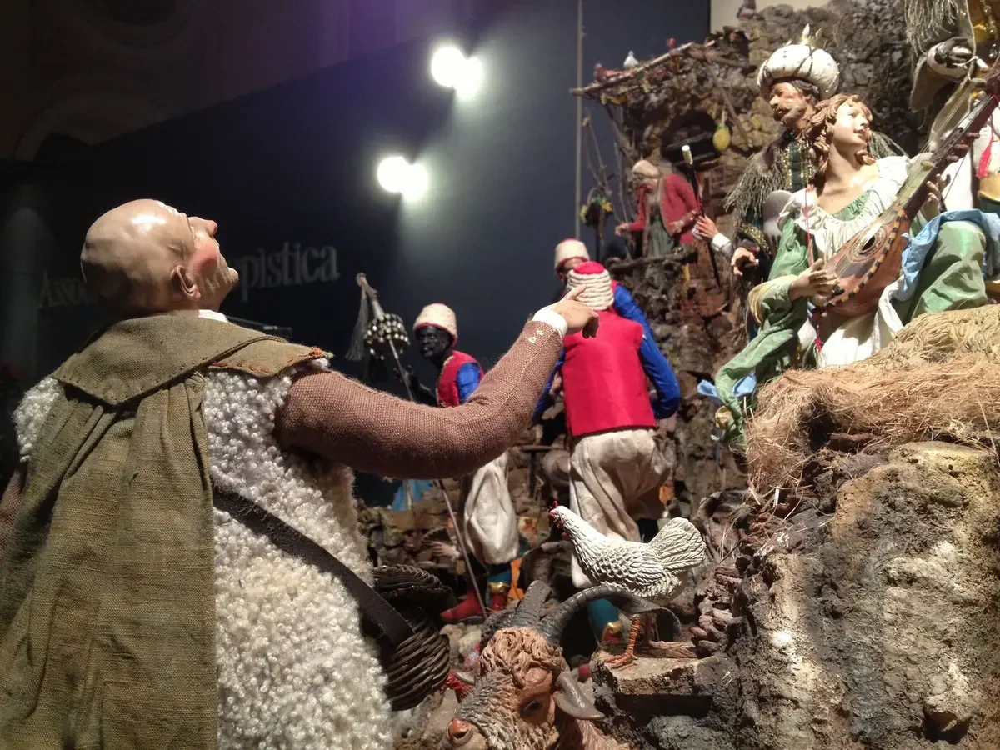
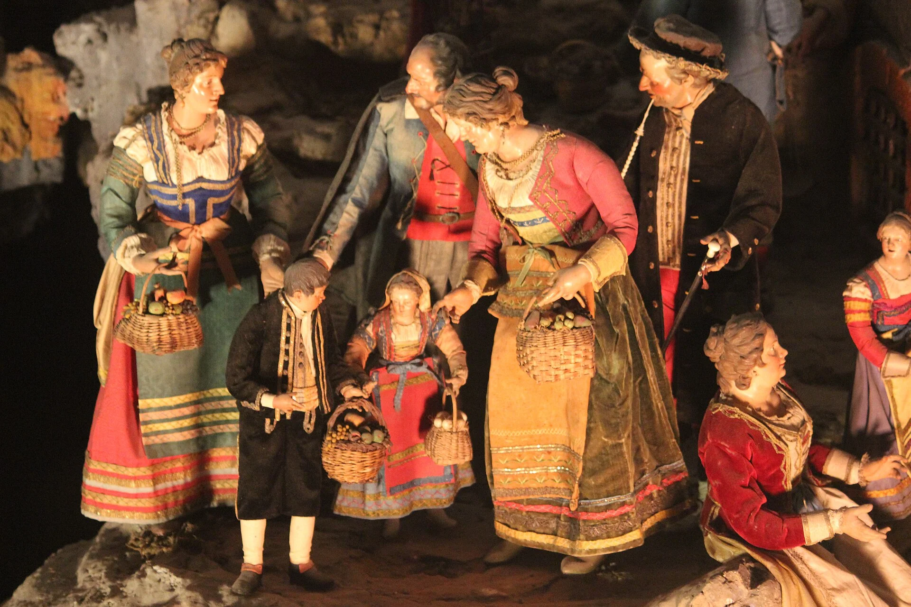
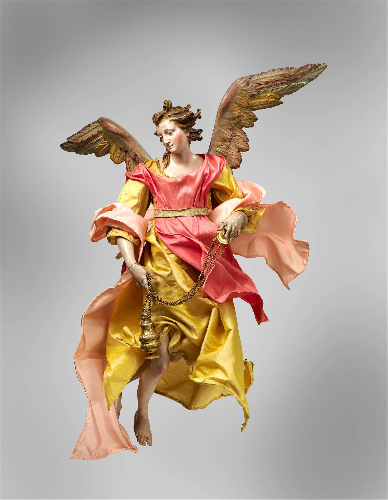
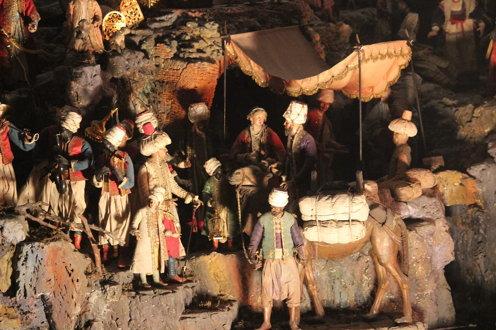
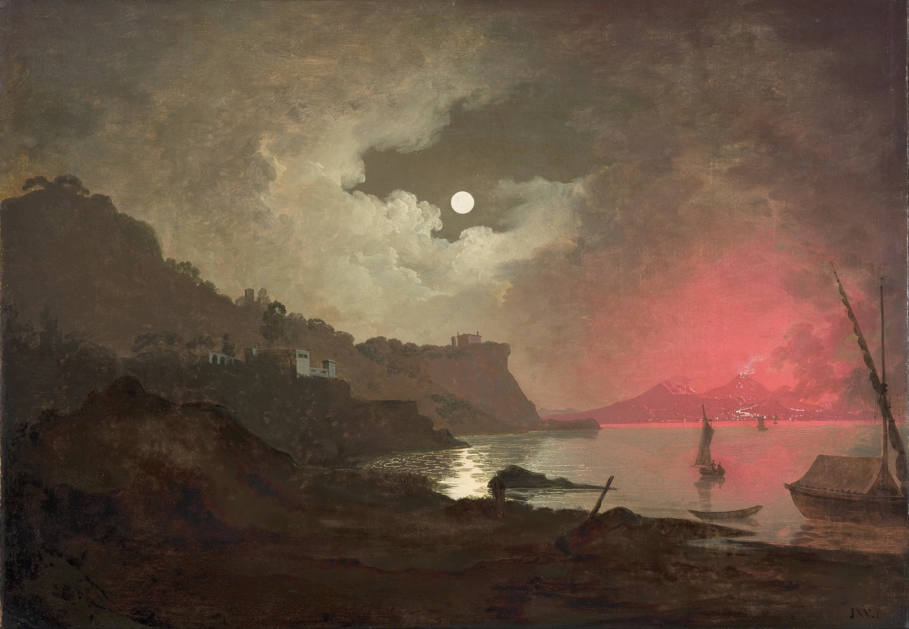
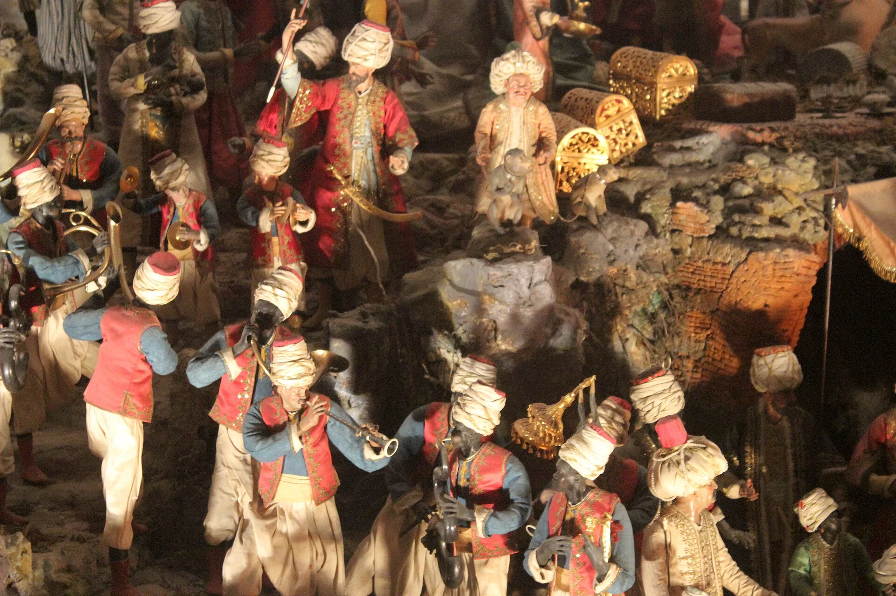

아직 펼치지 않은 카드손바닥 위의 베들레헴 · 2나폴리 구유 인형 ‘파스토리’나폴리 구유에는 아기 예수 둘레로 빵 굽는 사람, 생선 장수까지 온 마을이 등장해요. 이 작은 인형 하나를 만드는 데 얼마나 걸릴까요?손바닥만 한 인형이 진짜 옷을 입고 있대!
18세기 · 괴테의 기록은 1787년이탈리아 나폴리
나폴리 구유 인형 ‘파스토리’
18세기 나폴리 사람들은 구유를 온 마을로 채웠어요. 철사와 나무와 구운 흙으로 만든 인형들이 값진 옷을 입고 베들레헴으로 모여들었지요. 1787년 괴테가 적은 차례대로, 나폴리 집의 평평한 지붕 위에 구유를 차려 보세요.
나폴리 사람들은 옥상에도 구유를 차렸대. 우리도 지붕 위에 오두막을 세우고 천사를 띄워 볼까?
검수 전 시안이에요(기준서 2판). 장면에는 기록에 있는 것만 옮겼어요. 지붕 위 구유 무대는 괴테의 글을 따라 이 안내서가 그린 그림이에요. 상상은 ‘눈 감고 상상해 보기’에만 썼어요.
시안 확인용카드 단계 미리 보기
1
온 마을이 모여드는 구유
나폴리 구유 인형은 이탈리아 말로 ‘파스토리’라고 해요. 본디 ‘목자들’이라는 뜻이에요. 그런데 목자가 아닌 인형도 모두 이렇게 불러요.
뉴욕 메트로폴리탄 미술관은 18세기 나폴리 구유가 세 장면으로 이루어진다고 설명해요. 첫째는 아기가 태어난 자리예요. 천사와 목자와 양이 함께 있어요.
둘째는 동방박사 세 사람의 행렬이에요. 화려한 옷을 입은 시종들이 길게 뒤따라요. 셋째는 베들레헴 여관 앞에 몰려든 시골 사람과 도시 사람들이에요.

그 여관은 성경에 나오는 곳이에요. 그 밤 마리아와 요셉이 머물 자리가 없었던 곳이지요(누가복음 2장 7절).
사진은 나폴리 산 마르티노 박물관의 ‘쿠치니엘로 구유’예요. 수집가 미켈레 쿠치니엘로가 인형과 동물과 소품 800점쯤을 나라에 기증했어요. 그는 구유를 차리고 세우는 일을 손수 챙겼고, 구유는 1879년에 문을 열었어요.
구유에 온 마을 사람들이 모였어. 바구니도 들고 왔네!
물어보기바구니에 무엇을 담아 왔을까?
2
철사와 나무와 구운 흙
메트로폴리탄 미술관에는 1964년 로레타 하인스 하워드가 기증한 18세기 나폴리 구유 인형이 140점 넘게 있어요.
인형의 몸은 철사에 거친 삼 섬유를 감아 만들었어요. 팔다리는 나무로 곱게 깎고, 머리와 어깨는 테라코타로 빚었어요. 테라코타는 흙을 빚어 구운 것이에요.
미술관은 몸이 철사라서 얼굴 표정에 맞게 몸짓을 마음대로 줄 수 있다고 설명해요. 키는 대개 30~38cm예요. 30cm 자 하나쯤이지요. 무대 앞에 설지 멀리 설지에 따라 크기를 달리했대요.

왼쪽 천사는 미술관이 나폴리의 조각가 주세페 산마르티노(1720~1793)가 만든 것으로 적은 인형이에요. 나무로 깎은 날개를 달고 향로를 들었어요. 오른쪽 시골 아낙은 과일과 채소 바구니를 늘어놓았어요.
인형 몸 안에는 철사가 들어 있대. 그래서 팔다리를 구부릴 수 있어.
물어보기너라면 이 인형에게 어떤 몸짓을 시킬래?
3
동방박사의 긴 행렬
나폴리 구유에서 가장 화려한 무리는 동방박사의 행렬이에요. 성경은 동방에서 온 박사들이 별을 따라 아기를 찾아왔다고 전해요(마태복음 2장).
나폴리 사람들은 그 먼 길을 긴 행렬로 꾸몄어요. 사진 속 행렬에는 터번을 쓴 악사들과 짐을 실은 낙타가 보여요.

메트로폴리탄 미술관의 ‘늙은 왕’ 인형은 비단과 새틴 옷에 금실과 은실을 둘렀어요. 유리 단추를 달고, 은에 금을 입힌 칼과 왕관을 지녔어요. 새틴은 윤이 나게 짠 비단이에요.
박사님들이 낙타랑 악사들이랑 줄지어 오고 있어!
물어보기행렬 맨 앞에서는 무슨 소리가 날까?
4
지붕 위의 구유
독일 시인 괴테(Goethe)는 1787년 봄 나폴리에 머물렀어요. 그해 5월 27일에 쓴 글에 나폴리 사람들이 아끼는 구유가 나와요.
성탄이면 어느 성당에서나 구유를 볼 수 있대요. 목자와 천사와 왕들이 아기에게 경배하는 모습을 값지게 꾸민 구유예요.
밝은 도시 나폴리에서는 이 구유가 집의 평평한 지붕 위까지 올라갔다고 괴테는 적었어요. 괴테가 적은 차례대로 지붕 위에 구유를 차려 보세요.
“그러나 이 모든 것을 흉내 낼 수 없이 빛나게 하는 것은 뒷배경, 베수비오와 그 둘레를 품은 뒷배경이다.”
괴테, 『이탈리아 기행』 1787년 5월 27일 나폴리 · 독일어를 이 안내서가 옮김
괴테는 성모와 아기와 둘레의 모든 이들을 값지게 차려입혔다고 적었어요. 그 옷에 집안이 큰돈을 썼대요.
무대 그림은 괴테의 글을 따라 이 안내서가 그렸어요. 괴테는 ‘둘레에 선 이들’과 ‘둘레에 떠 있는 이들’이라고만 적었어요. 그림에서는 선 이들을 목자와 왕으로, 떠 있는 이들을 천사로 그렸어요.
1787년 나폴리, 지붕 위에 구유를 차리는 집이라면 누구의 옷에 가장 공을 들일까요?
나폴리 사람들은 옥상에도 구유를 차렸대!
물어보기천사들은 어떻게 하늘에 떠 있을까?
눈 감고 상상해 보기
좁은 계단을 올라 평평한 지붕에 서요. 늘푸른 가지 냄새가 나고, 비단옷 자락이 바람에 사락거려요. 지붕 너머 바다 건너로 베수비오가 희미한 연기를 올려요. 아래 골목에서는 성탄을 앞둔 사람들 소리가 올라와요.
눈을 감아 봐. 옥상에 올라왔어. 초록 가지 냄새가 나. 멀리 바다 건너에서 화산이 연기를 뿜어.
나의 자리
내가 사는 곳의 지붕 위에 구유를 차린다면, 뒷배경에는 무엇이 들어올까요?
우리 집 옥상에 구유를 놓으면, 뒤에 무엇이 보일까?
마음에 닿는 한 줄을 고르거나 직접 써 보세요. 한 줄을 남기면 이 자리의 도장이 찍혀요. 이 기기에만 저장돼요.
더 깊이
궁금한 칸만 펼쳐 읽어도 괜찮아요.
알고 보면
파스토레와 파스토리 구유 인형 하나는 ‘파스토레’, 여럿은 ‘파스토리’예요. 이탈리아 국가 문화재 목록은 산 마르티노 박물관의 한 인형(1780~1825년쯤)을 ‘도시 사람을 나타낸 구유의 파스토레’라고 적었어요. 목자가 아니어도 구유 인형이면 파스토레예요.
살아 있는 사람 괴테는 지붕 위 구유의 인형들 사이에 때로 살아 있는 사람이 끼어들었다고도 적었어요. 이것이 점점 부잣집의 큰 즐거움이 되었대요. 저녁이면 궁전에서 역사나 시 속의 장면을 사람이 직접 꾸며 보였다고 해요.
미술관의 구유 메트로폴리탄 미술관은 하워드의 기증 뒤로 성탄 철마다 이 인형들로 나폴리 구유를 다시 차려 왔다고 소개해요.
그림 속 베수비오

영국 화가 조지프 라이트(1734~1797)는 1773년부터 1775년까지 이탈리아를 여행했어요. 1774년 나폴리 바닷가에서 본 베수비오에 크게 마음이 움직였대요.
이 그림은 1788~1790년쯤 영국 더비에서 그렸어요. 라이트는 화산이 터지는 것을 직접 보지는 못했어요. 그 힘을 상상해서 그렸대요. 그는 평생 이 장면을 서른 번이나 다르게 그렸어요.
괴테가 지붕 위 구유를 적은 지 한두 해 뒤에 그린 그림이에요.
기록마다 다른 점
세 장면 메트로폴리탄 미술관은 나폴리 구유의 세 장면을 ‘아기가 태어난 자리, 동방박사의 행렬, 여관 앞 사람들’로 설명해요. 산 마르티노 박물관을 맡은 이탈리아 문화부는 쿠치니엘로 구유의 세 장면을 ‘가운데의 탄생, 양옆의 목자들에게 알리는 장면과 여관’으로 소개해요.
누가 빚었나 메트로폴리탄 미술관의 늙은 왕과 한 남자 인형에는 만든 이가 적혀 있지 않아요. 미술관은 몇몇 천사의 머리를 산마르티노와 그 제자들이 빚었다고 전해진다고 설명해요. 나폴리와 뮌헨에 있는 인형들과 솜씨를 견주어 보면 그 이야기가 맞아 보인다고 해요.
직접 가 보기

확인한 날 · 2026년 11월 18일 · 바뀌기 쉬운 정보라 정기적으로 다시 확인해요
쿠치니엘로 구유는 나폴리 보메로 언덕의 산 마르티노 박물관에 있어요. 옛 수도원 건물이에요. 구유는 거짓 동굴 안에 차려 두었고, 불빛이 새벽과 한낮, 노을과 밤을 차례로 흉내 내요.
박물관은 화요일만 쉬고 8시 30분부터 18시 30분까지 열어요(마지막 입장 17시 30분). 구유 전시실은 9시 30분에 열어요. 입장료는 6유로, 18~25세는 2유로, 18세 아래는 무료예요.
괴테가 적은 차례대로 금박
괴테가 적은 차례(오두막 틀 → 늘푸른 나무 → 성모와 아기 → 둘레에 선 이들 → 둘레에 떠 있는 이들 → 뒷배경)대로 지붕 위에 구유를 차리면 카드에 금박이 입혀져요.
오두막 틀 → 늘푸른 나무 → 성모와 아기 → 둘레에 선 이들 → 둘레에 떠 있는 이들 → 뒷배경
1787년 나폴리 집의 옷장 채색
둘 가운데 하나만 해도 카드가 채색돼요.
1787년 나폴리 집이라면, 누구의 옷에 가장 공을 들일지 고르기
아이와 함께 ‘영화처럼 보기’를 끝까지 보기
근거 보기 (8)
- 괴테, 『이탈리아 기행』 1787년 5월 27일 나폴리(프로젝트 구텐베르크 독일어판) — 성당의 구유, 평평한 지붕 위 구유의 차례(오두막 틀·늘푸른 나무와 덤불·성모와 아기·둘레에 선 이들과 떠 있는 이들·베수비오를 품은 뒷배경), 옷에 쓴 큰돈, 살아 있는 사람
- 이탈리아 문화부: 산 마르티노 수도원과 박물관 — 쿠치니엘로가 기증한 800점쯤, 손수 챙긴 차림, 1879년, 가운데의 탄생과 양옆의 두 장면, 거짓 동굴과 불빛, 여는 때와 입장료(2026년 11월 18일 확인)
- 이탈리아 국가 문화재 목록: ‘도시 사람을 나타낸 구유의 파스토레’(나폴리 공방, 1780~1825년쯤, 산 마르티노 박물관)
- 메트로폴리탄 미술관 소장품 설명(하워드 기증 나폴리 구유 인형) — 1964년 140점 넘게, 세 장면, 30~38cm와 무대 속 자리, 철사·삼 섬유 몸과 나무 팔다리와 테라코타 머리, 산마르티노와 제자들
- 메트로폴리탄 미술관 ‘천사’(64.164.8, 주세페 산마르티노, 43.8cm, 테라코타 머리·나무 팔다리와 날개·삼 섬유를 감은 철사 몸)
- 메트로폴리탄 미술관 ‘늙은 왕’(64.164.83, 비단과 새틴 옷·금실과 은실·유리 단추·은에 금을 입힌 칼과 왕관, 만든 이 적히지 않음)
- 메트로폴리탄 미술관 ‘남자’(64.164.79, 여러 가지 천·금실·은단추, 만든 이 적히지 않음)
- 사우스오스트레일리아 미술관: 조지프 라이트 ‘포실리포에서 본 베수비오’ — 1788~1790년쯤 더비, 1773~1775년 이탈리아 여행, 1774년 나폴리, 분화를 직접 보지 못함, 서른 가지 그림
그림·사진·소리 출처
- 사진: Miguel Hermoso Cuesta · CC BY-SA 4.0 · 위키미디어 공용
- 사진: Miguel Hermoso Cuesta · CC BY-SA 4.0 · 위키미디어 공용
- 사진: Miguel Hermoso Cuesta · CC BY-SA 4.0 · 위키미디어 공용
- 사진: 메트로폴리탄 미술관 · CC0 · 위키미디어 공용
- 사진: 메트로폴리탄 미술관 · CC0 · 위키미디어 공용
- 사진: 메트로폴리탄 미술관 · CC0 · 위키미디어 공용 · 일부 잘라 씀
- 그림: 조지프 라이트 · 퍼블릭 도메인 · 위키미디어 공용
- 사진: Antonio Fucito · CC BY-SA 2.0 · 위키미디어 공용
‘처음 만나는 기독교 문화’의 깊은 카드예요. 카드 단계와 남긴 글은 이 기기에만 저장돼요.